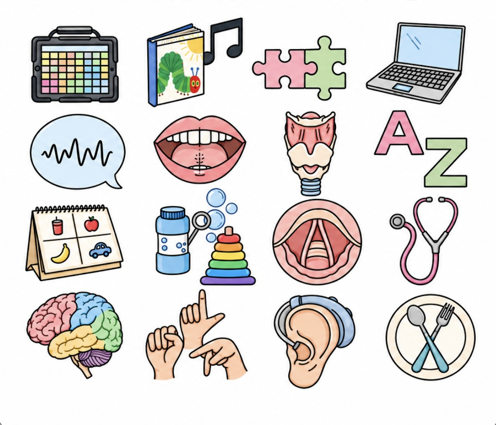

WELCOME TO MY ONLINE PORTFOLIO
Katherine Link
Hello! My name is Katherine Link. Welcome to my online portfolio, where I share a glimpse into my undergraduate experiences as I prepare for graduate school.
↓
My Purpose and Goals
I hope to share my experiences and accomplishments that have shaped my undergraduate journey. I want to provide a better understanding of who I am and what I have done while working towards my goal of becoming a speech-language pathologist. Throughout college, I have worked to balance my academics with my involvement in organizations, employment, athletics, clinical experiences, and research opportunities. A resume often narrows a person down to a single piece of paper, while a transcript summarizes academic performance through numbers and letters. I hope this portfolio provides a more personal explanation of the work and dedication behind what I have achieved that may not be apparent from these documents alone. Lastly, I think it is important to reflect on and be proud of achievements that may not always be seen by others. Through this portfolio, my goal is to create a more complete representation of who I am and the work I have put into preparing for my future.
Learn More About Me"By far, the best investment you can make is in yourself."—WARREN BUFFETT